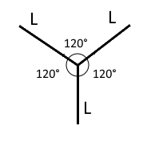

1. Найти наибольшее пятизначное число А, у которого четвёртая цифра больше пятой, третья больше суммы четвёртой и пятой, вторая больше суммы третьей, четвёртой и пятой и первая больше суммы остальных.
2. В каждой клетке прямоугольной таблицы, содержащей не менее двух столбцов и не менее двух строк, записано одно из чисел +1, -1. При этом количество +1 не меньше двух и количество -1 не меньше двух. Доказать, что найдутся две строки и два столбца такие, что сумма четырёх чисел, стоящих в их пересечении, равна 0.
3. Доказать, что максимальное количество сторон выпуклого многоугольника, стороны которого лежат на диагоналях данного выпуклого 100-угольника, не больше 100.

4. Три прямолинейных коридора одинаковой длины L образуют фигуру, изображённую на рисунке.
По ним бегают гангстер и полицейский. Максимальная скорость полицейского в два раза больше, чем максимальная скорость гангстера.
Полицейский сможет увидеть гангстера, если окажется от него на расстоянии, большем чем а.
Доказать, что полицейский всегда может поймать гангстера
a) если а > L/3,
б) если а > L/4.
5. 10 вершин правильного 20-угольника A1A2...A20 покрашены в чёрный цвет, а 10 - в белый. Рассматривается множество, состоящее из диагонали А1А4 и всех диагоналей, ей конгруэнтных. Доказать, что в этом множестве количество диагоналей с двумя чёрными концами равно количеству диагоналей с двумя белыми концами.